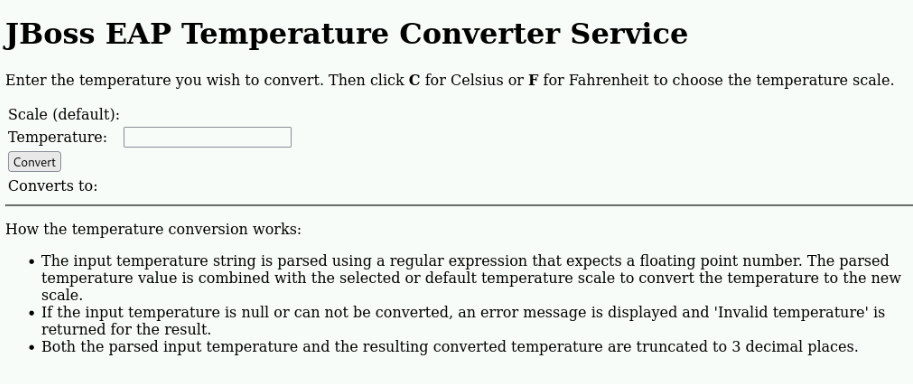

Deploying Applications to a Standalone Server
The Deployments Section of the standalone.xml file
-
You can deploy Jakarta EE applications to a standalone Red JBoss EAP 8 instance by configuring the <deployments> section in the
standalone.xmlfile. -
Each
<deployment>element within<deployments>corresponds to an application. -
For example:
<deployments> <deployment name="kitchensink.war" runtime-name="kitchensink.war"> <content sha1="f9418ea27525e0f3c02ea099405265246b22b55a"/> </deployment> <deployment name="temperature-converter.war" runtime-name="temperature-converter.war"> <content sha1="555df23b973ed9f76f7c817deec3bab6a13a7ea3"/> </deployment> <deployment name="numberguess.war" runtime-name="numberguess.war"> <fs-exploded path="/opt/apps/numberguess.war"/> </deployment> </deployments> -
The example above deploys three applications:
-
kitchensink.war: Managed by JBoss EAP
-
temperature-converter.war: Managed by JBoss EAP
-
numberguess.war: Deployed by using the unmanaged method
-
-
The <content> element contains a unique secure hash algorithm (SHA) value, serving as the deployment’s identifier.
-
The managed deployments are stored in the
$JBOSS_HOME/standalone/data/contentdirectory which is the deployment cache directory. -
JBoss EAP 8 organizes files by creating a directory named after the first two characters of the SHA1 code. Within this directory, another subdirectory is made with the remaining characters of the code.
-
For the deployments listed above, the following directory should be available:
[vagrant@server labs]$ tree -d JBOSS_HOME/standalone/data/content/ standalone/data/content/ ├── 55 │ └── 5df23b973ed9f76f7c817deec3bab6a13a7ea3 └── f9 └── 418ea27525e0f3c02ea099405265246b22b55a -
The
numberguess.warapplication is deployed by using the unmanaged approach. Therefore, its files are not present in the$JBOSS_HOME/standalone/data/contentdirectory.
|
Note: Red Hat does not recommend adding a <deployment> element to the <deployments> section of a JBoss EAP configuration manually. However, it is possible to delete entries manually, and restart the server to undeploy an application. |
Deploying Applications with Management Tools
-
The deployment process in JBoss EAP 8 involves installing an application by copying the package and executing necessary server configurations.
-
There are three ways to deploy an application to a standalone server:
-
The management console
-
The management CLI
-
The file system deployer
-
Deploying through the Management Console.
-
The management console has a section to manage the deployments available in the standalone server.
-
This section is available in the management console, in the
Deploymentsmenu at the top of the page. -
You can create a deployment by clicking Add, to start the deployments wizard.
-
The first step of the wizard asks for the type of the deployment. Three options are available:
-
Upload Deployment
-
By using this option, you upload an application.
-
This upload makes the application available in the
$JBOSS_HOME/standalone/data/contentdirectory, and adds a <deployment> element in thestandalone.xmlconfiguration file.
-
-
Add Unmanaged Deployment
-
This option requires specifying a path to the application archive.
-
It is called unmanaged because JBoss EAP 8 doesn’t store the application in the deployment cache, allowing any user with permission to the configuration file to remove it.
-
-
Create Empty Deployment
-
This option creates an empty deployment in an directory with the same structure of an enterprise application archive (EAR), or a web application archive (WAR).
-
You can test deployments by copying individual files to that directory.
-
-
-
You can upload the application file by using the Upload Deployment option. You can select a file from your local file system, or drag and drop the application file.
-
The next step on the wizard has three options to be defined:
-
Name:
-
Identifies the deployment.
-
It must be a unique value across all deployments.
-
-
Runtime Name
-
Identifies the deployment internally within the server runtime.
-
JBoss EAP bases internal names for application modules, such as EJB names, in this runtime name.
-
It is common that the value for Name, and Runtime Name are the same.
-
-
Enabled
-
Defines if the deployment should start immediately.
-
If it is not checked, then it is possible to enable it later.
-
-
Enabling and Disabling a Deployment by Using the Management Console
-
An application can be configured to start during the startup of JBoss EAP.
-
Configure the deployment as enabled if it should start during JBoss EAP startup.
-
You can enable and disable a deployment in the management console by using the
Deploymentsmenu. -
To disable an application, click the application. A combo box shows. Clicking the down arrow, the Disable option is displayed. Click Disable and then, in the confirmation screen, click Confirm to disable the deployment.
-
To enable a deployment, click the application and the combo box shows again. Click the down arrow to see the Enable option. Click Enable and then, in the confirmation screen, click Confirm to enable the deployment.
Undeploying an Application Using the Management Console
-
You can undeploy applications in the management console by using the
Deploymentsmenu. -
To undeploy an application, click the application. A combo box shows.
-
Click the down arrow, to see the Remove option. Click Remove and then, in the confirmation screen, click Confirm to undeploy the application.
|
Note: Undeploying is different from disabling a deployment. Undeploying removes the application from JBoss EAP, uninstalling it entirely. Disabling prevents the server from starting the application, but it can be re-enabled later. |
Deploying Using the Management CLI
-
The management CLI provides the deploy command to start a deployment.
-
The following is a list of arguments for the deploy command:
-
file_path
-
Path to the application to deploy.
-
-
--url
-
URL at which the deployment content is available for upload to the deployment content repository.
-
-
--name
-
The unique name of the deployment. If no name is provided, then the file name is used.
-
-
--runtime-name
-
Optional, defines the runtime name for the deployment.
-
-
--force
-
If the deployment with the specified name already exists, by default, then the deployment is aborted and the corresponding message is printed.
-
The --force, or -f argument forces the replacement of the existing deployment with the one specified in the command arguments.
-
-
--disabled
-
Indicates that the deployment is added to the repository, but in a disabled state.
-
-
-
To deploy an application that is located at
/home/vagrant/myapp.waruse the following command:[standalone@localhost:19990 /] deploy /home/vagrant/myapp.war --name=myapp.war
Undeploying Using the Management CLI Tool
-
The management CLI provides the undeploy command to remove a deployment.
-
The following is a list of arguments for the undeploy command:
-
name
-
The name of the application to undeploy.
-
-
--keep-content
-
Disable the deployment but do not remove its content from the repository.
[standalone@localhost:19990 /] undeploy myapp.war
-
-
Lab 1: Deploy application using the management console
Outcome: In this lab, you deploy the application on Red Hat JBoss EAP 8 standalone server using management console.
Pre-requisites: Download the two applications (WAR files) we will deploy in this exercise under /opt directory:
-
Open a terminal window and run the following commands to start the JBoss EAP 8 server using the /opt/standalone-running as the base directory:
[vagrant@server ~]$ sudo mkdir -p /opt/standalone-running [vagrant@server ~]$ cd /opt/EAP-8.0.0/standalone/ [vagrant@server standalone]$ sudo cp -r configuration deployments lib \ /opt/standalone-running [vagrant@server standalone]$ cd /opt/EAP-8.0.0/bin [vagrant@server bin]$ sudo ./standalone.sh \ -Djboss.server.base.dir=/opt/standalone-running/ \ -Djboss.socket.binding.port-offset=10000 \ -Djboss.bind.address=172.25.250.9 \ -Djboss.bind.address.management=172.25.250.9
-
Navigate to http://localhost:19990 to access the management console page, using
adminas username andredhat123as the password. -
Click
Deploymentsin the navigation menu bar. You do not have anything deployed yet, so the list of deployments is empty. -
Click the plus sign icon, and select the
Upload Deploymentoption. -
Click
Choose a file or drag it hereand select thekitchensink.warfile, located in your/optdirectory. ClickNext. -
You can use the default values or you can change the name and runtime name of the deployment.
-
Click Finish and then Close to complete the wizard. You should now see
kitchensink.warin the list of deployments. -
Inspect the terminal window of your running JBoss EAP instance. You should see an output similar to the following:
07:08:08,988 INFO [org.jboss.weld.Bootstrap] (Weld Thread Pool -- 4) WELD-000119: Not generating any bean definitions from org.jboss.as.quickstarts.kitchensink.rest.MemberResourceRESTService because of underlying class loading error: Type javax.validation.ConstraintViolationException from [Module "deployment.kitchensink.war" from Service Module Loader] not found. If this is unexpected, enable DEBUG logging to see the full error. 07:08:09,979 INFO [jakarta.enterprise.resource.webcontainer.faces.config] (ServerService Thread Pool -- 77) Initializing Mojarra 4.0.4.redhat-00001 for context '/kitchensink' 07:08:11,223 INFO [org.wildfly.extension.undertow] (ServerService Thread Pool -- 77) WFLYUT0021: Registered web context: '/kitchensink' for server 'default-server' 07:08:11,318 INFO [org.jboss.as.server] (External Management Request Threads -- 1) WFLYSRV0010: Deployed "kitchensink.war" (runtime-name : "kitchensink.war")
-
Navigate to
http://172.25.250.9:18080/kitchensink. Thekitchensink.warapplication is an example of a Jakarta EE 8 web-enabled database application using JSF, CDI, EJB, JPA, and Bean Validation. -
Confirm that
/opt/standalone-running/configuration/standalone.xmlfile to inspect its contents. You should see a<deployments>section at the end of this file that contains yourkitchensink.wardeployment:[vagrant@server ~]$ vi /opt/standalone-running/configuration/standalone.xml ...output_omitted... <deployments> <deployment name="kitchensink.war" runtime-name="kitchensink.war"> <content sha1="f9418ea27525e0f3c02ea099405265246b22b55a"/> </deployment> </deployments> ...output_omitted... -
Navigate to the
/opt/standalone-running/data/contentdirectory. This directory stores deployments made through JBoss EAP’s management tools, each identified by a SHA1 hash from standalone.xml. Subdirectories are named after the first two characters of the hash, followed by the rest, containing the application’s binary file.[vagrant@server ~]$ cd /opt/standalone-running/data/content/ [vagrant@server content]$ tree f9 . └── f9 └── 418ea27525e0f3c02ea099405265246b22b55a └── content 2 directories, 1 file
Lab 2: Disable the deployment by using the management console.
Outcome: In this lab, you disable the application on Red Hat JBoss EAP 8 standalone server using management console.
-
You can disable a deployment to undeploy the application without removing it from the server.
-
Go back to the Deployments page of the management console.
-
Click
kitchensink.warapplication. In the page that shows in the right, clickDisable. The application status changes to STOPPED. -
Look in the terminal window of your running instance of JBoss EAP 8. You should see an output similar to the following:
07:48:41,614 INFO [org.jboss.as.jpa] (ServerService Thread Pool -- 79) WFLYJPA0011: Stopping Persistence Unit (phase 2 of 2) Service 'kitchensink.war#primary' 07:48:41,619 INFO [org.hibernate.orm.beans] (ServerService Thread Pool -- 79) HHH10005004: Stopping BeanContainer : org.hibernate.resource.beans.container.internal.CdiBeanContainerExtendedAccessImpl@206ef37 07:48:41,626 INFO [org.jboss.as.jpa] (ServerService Thread Pool -- 79) WFLYJPA0011: Stopping Persistence Unit (phase 1 of 2) Service 'kitchensink.war#primary' 07:48:41,627 INFO [org.jboss.as.connector.subsystems.datasources] (MSC service thread 1-4) WFLYJCA0010: Unbound data source [java:jboss/datasources/KitchensinkQuickstartDS] 07:48:41,676 INFO [org.jboss.as.server.deployment] (MSC service thread 1-5) WFLYSRV0028: Stopped deployment kitchensink.war (runtime-name: kitchensink.war) in 105ms 07:48:41,743 INFO [org.jboss.as.server] (External Management Request Threads -- 1) WFLYSRV0009: Undeployed "kitchensink.war" (runtime-name: "kitchensink.war")
The application, and all the services that the application server provides to it, stop.
-
Reload the http://172.25.250.9:18080/kitchensink URL in your browser. You get an HTTP 404 error.
Lab 3: Deploy application using the Management CLI
Outcome: In this lab, you deploy the application on Red Hat JBoss EAP 8 standalone server using management CLI.
Pre-requisites: Download the two applications (WAR files) we will deploy in this exercise under /opt directory:
-
Start the management CLI by running the
jboss-cli.shscript in the bin directory of JBoss EAP.[vagrant@server ~]$ cd /opt/EAP-8.0.0/bin/ [vagrant@server bin]$ sudo -u jboss ./jboss-cli.sh --connect --controller=localhost:19990
-
You can deploy applications by using the deploy command, and passing the location of the file to deploy:
[vagrant@server bin]$ /opt/EAP-8.0.0/bin/jboss-cli.sh [disconnected /] connect localhost:19990 Authenticating against security realm: ManagementRealm Username: XXXXX Password: XXXXX
-
You can deploy applications by using the deploy command, and passing the location of the file to deploy:
[standalone@localhost:19990 /] deploy \ /opt/temperature-converter.war
-
Look in the terminal window of your running instance of JBoss EAP. You should see output similar to the following:
...output_omitted... 07:55:50,190 INFO [org.wildfly.extension.undertow] (ServerService Thread Pool -- 80) WFLYUT0021: Registered web context: '/temperature-converter' for server 'default-server' 07:55:50,626 INFO [org.jboss.as.server] (management-handler-thread - 2) WFLYSRV0010: Deployed "temperature-converter.war" (runtime-name : "temperature-converter.war")
-
Navigate to http://172.25.250.9:18080/temperature-converter and confirm you are able to view the application.

Lab 4: Disable the deployment by using the management CLI
Outcome: In this lab, you disable an application by using the management CLI tool.
-
List the available applications by using the following commands:
[standalone@localhost:19990 /] cd deployment [standalone@localhost:19990 deployment] ls kitchensink.war temperature-converter.war
-
Disable the deployment by using the undeploy operation:
[standalone@localhost:19990 deployment] ./temperature-converter.war:undeploy {"outcome" => "success"} -
Look in the terminal window of your running instance of JBoss EAP 8. You should see an output similar to the following:
...output_omitted... 07:55:54,204 INFO [org.jboss.as.repository] (management-handler-thread - 2) WFLYDR0002: Content removed from location /opt/standalone-running/data/content/55/5df23b973ed9f76f7c817deec3bab6a13a7ea3/content 07:55:55,204 INFO [org.jboss.as.server] (management-handler-thread - 2) WFLYSRV0009: Undeployed "temperature-converter.war" (runtime-name: "temperature-converter.war")
-
Reload the
http://172.25.250.9:18080/temperature-converterURL in your browser. You get an HTTP 404 error. -
Use the redeploy operation to enable the deployment again:
[standalone@localhost:19990 deployment] ./temperature-converter.war:redeploy {"outcome" => "success"} -
Reload the
http://172.25.250.9:18080/temperature-converterURL in your browser. The temperature-converter application shows.
Lab 5: Clean up the deployment by using the management CLI
Outcome: In this lab, you clean up the application by using the management CLI tool.
-
Remove the kitchensink.war application:
[standalone@localhost:19990 /] /deployment=kitchensink.war:remove
-
Remove the temperature-converter.war application:
[standalone@localhost:19990 /] /deployment=temperature-converter.war:remove
-
Exit the management CLI tool:
[standalone@localhost:19990 /] exit
-
Stop the instance of JBoss EAP by pressing
Ctrl+Cin the terminal window that is running the instance.